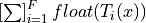
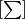
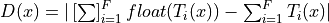
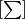
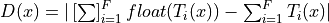
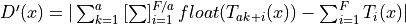

Note
Go to the end to download the full example code
Convert a pipeline with a LightGBM regressor#
The discrepancies observed when using float and TreeEnsemble operator (see Issues when switching to float) explains why the converter for LGBMRegressor may introduce significant discrepancies even when it is used with float tensors.
Library lightgbm is implemented with double. A random forest regressor
with multiple trees computes its prediction by adding the prediction of
every tree. After being converting into ONNX, this summation becomes
,
where F is the number of trees in the forest,
 the output of tree i and 
a float addition. The discrepancy can be expressed as
.
This grows with the number of trees in the forest.
the output of tree i and 
a float addition. The discrepancy can be expressed as
.
This grows with the number of trees in the forest.
To reduce the impact, an option was added to split the node TreeEnsembleRegressor into multiple ones and to do a summation with double this time. If we assume the node if split into a nodes, the discrepancies then become .
Train a LGBMRegressor#
import packaging.version as pv
import warnings
import timeit
import numpy
from pandas import DataFrame
import matplotlib.pyplot as plt
from tqdm import tqdm
from lightgbm import LGBMRegressor
from onnxruntime import InferenceSession
from skl2onnx import to_onnx, update_registered_converter
from skl2onnx.common.shape_calculator import (
calculate_linear_regressor_output_shapes,
) # noqa
from onnxmltools import __version__ as oml_version
from onnxmltools.convert.lightgbm.operator_converters.LightGbm import (
convert_lightgbm,
) # noqa
N = 1000
X = numpy.random.randn(N, 20)
y = numpy.random.randn(N) + numpy.random.randn(N) * 100 * numpy.random.randint(
0, 1, 1000
)
reg = LGBMRegressor(n_estimators=1000)
reg.fit(X, y)
[LightGBM] [Warning] Auto-choosing row-wise multi-threading, the overhead of testing was 0.000384 seconds.
You can set `force_row_wise=true` to remove the overhead.
And if memory is not enough, you can set `force_col_wise=true`.
[LightGBM] [Info] Total Bins 5100
[LightGBM] [Info] Number of data points in the train set: 1000, number of used features: 20
[LightGBM] [Info] Start training from score 0.047737
Register the converter for LGBMClassifier#
The converter is implemented in onnxmltools: onnxmltools…LightGbm.py. and the shape calculator: onnxmltools…Regressor.py.
def skl2onnx_convert_lightgbm(scope, operator, container):
options = scope.get_options(operator.raw_operator)
if "split" in options:
if pv.Version(oml_version) < pv.Version("1.9.2"):
warnings.warn(
"Option split was released in version 1.9.2 but %s is "
"installed. It will be ignored." % oml_version
)
operator.split = options["split"]
else:
operator.split = None
convert_lightgbm(scope, operator, container)
update_registered_converter(
LGBMRegressor,
"LightGbmLGBMRegressor",
calculate_linear_regressor_output_shapes,
skl2onnx_convert_lightgbm,
options={"split": None},
)
Convert#
We convert the same model following the two scenarios, one single TreeEnsembleRegressor node, or more. split parameter is the number of trees per node TreeEnsembleRegressor.
model_onnx = to_onnx(
reg, X[:1].astype(numpy.float32), target_opset={"": 14, "ai.onnx.ml": 2}
)
model_onnx_split = to_onnx(
reg,
X[:1].astype(numpy.float32),
target_opset={"": 14, "ai.onnx.ml": 2},
options={"split": 100},
)
Discrepancies#
sess = InferenceSession(
model_onnx.SerializeToString(), providers=["CPUExecutionProvider"]
)
sess_split = InferenceSession(
model_onnx_split.SerializeToString(), providers=["CPUExecutionProvider"]
)
X32 = X.astype(numpy.float32)
expected = reg.predict(X32)
got = sess.run(None, {"X": X32})[0].ravel()
got_split = sess_split.run(None, {"X": X32})[0].ravel()
disp = numpy.abs(got - expected).sum()
disp_split = numpy.abs(got_split - expected).sum()
print("sum of discrepancies 1 node", disp)
print("sum of discrepancies split node", disp_split, "ratio:", disp / disp_split)
sum of discrepancies 1 node 0.00021466136283891635
sum of discrepancies split node 4.437120443243742e-05 ratio: 4.837852963080463
The sum of the discrepancies were reduced 4, 5 times. The maximum is much better too.
disc = numpy.abs(got - expected).max()
disc_split = numpy.abs(got_split - expected).max()
print("max discrepancies 1 node", disc)
print("max discrepancies split node", disc_split, "ratio:", disc / disc_split)
max discrepancies 1 node 2.4378910405964405e-06
max discrepancies split node 4.344075570372752e-07 ratio: 5.611990401877959
Processing time#
The processing time is slower but not much.
print(
"processing time no split",
timeit.timeit(lambda: sess.run(None, {"X": X32})[0], number=150),
)
print(
"processing time split",
timeit.timeit(lambda: sess_split.run(None, {"X": X32})[0], number=150),
)
processing time no split 3.964509700000235
processing time split 4.466033599999719
Split influence#
Let’s see how the sum of the discrepancies moves against the parameter split.
res = []
for i in tqdm(list(range(20, 170, 20)) + [200, 300, 400, 500]):
model_onnx_split = to_onnx(
reg,
X[:1].astype(numpy.float32),
target_opset={"": 14, "ai.onnx.ml": 2},
options={"split": i},
)
sess_split = InferenceSession(
model_onnx_split.SerializeToString(), providers=["CPUExecutionProvider"]
)
got_split = sess_split.run(None, {"X": X32})[0].ravel()
disc_split = numpy.abs(got_split - expected).max()
res.append(dict(split=i, disc=disc_split))
df = DataFrame(res).set_index("split")
df["baseline"] = disc
print(df)
0%| | 0/12 [00:00<?, ?it/s]
8%|▊ | 1/12 [00:02<00:30, 2.80s/it]
17%|█▋ | 2/12 [00:05<00:26, 2.67s/it]
25%|██▌ | 3/12 [00:07<00:22, 2.47s/it]
33%|███▎ | 4/12 [00:10<00:20, 2.51s/it]
42%|████▏ | 5/12 [00:13<00:18, 2.67s/it]
50%|█████ | 6/12 [00:15<00:15, 2.54s/it]
58%|█████▊ | 7/12 [00:17<00:12, 2.45s/it]
67%|██████▋ | 8/12 [00:20<00:09, 2.42s/it]
75%|███████▌ | 9/12 [00:22<00:07, 2.53s/it]
83%|████████▎ | 10/12 [00:24<00:04, 2.37s/it]
92%|█████████▏| 11/12 [00:26<00:02, 2.26s/it]
100%|██████████| 12/12 [00:29<00:00, 2.30s/it]
100%|██████████| 12/12 [00:29<00:00, 2.44s/it]
disc baseline
split
20 1.575103e-07 0.000002
40 3.037472e-07 0.000002
60 2.724040e-07 0.000002
80 3.189124e-07 0.000002
100 4.344076e-07 0.000002
120 4.277097e-07 0.000002
140 4.333597e-07 0.000002
160 6.661283e-07 0.000002
200 6.661283e-07 0.000002
300 8.337342e-07 0.000002
400 1.094292e-06 0.000002
500 1.333882e-06 0.000002
Graph.
Total running time of the script: (0 minutes 44.260 seconds)